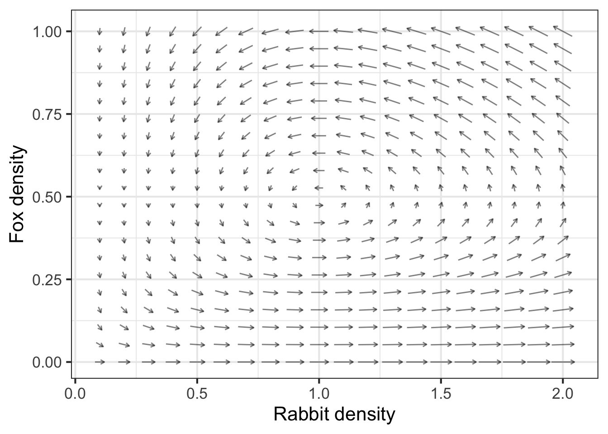
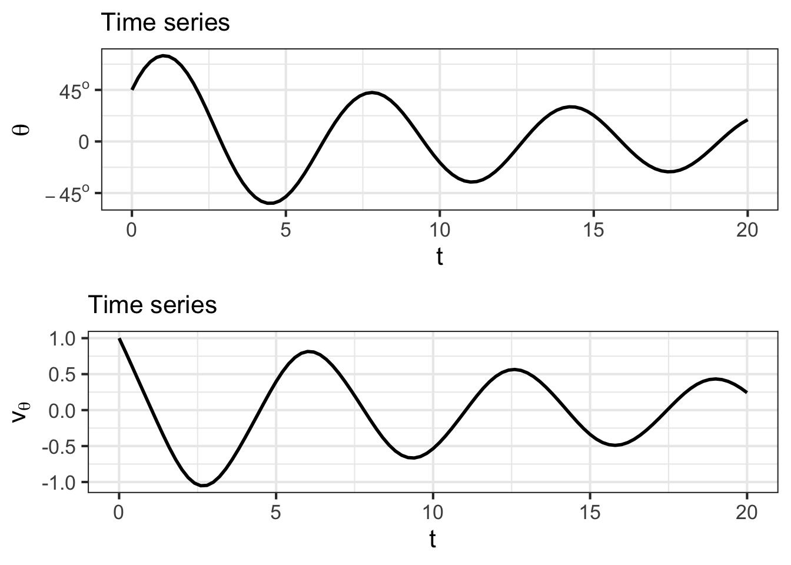

39 Differential equations
39.1 Dynamical systems
In this Block, we take on what an important application of derivatives: the representation of dynamical systems.
“Dynamical systems” (but not under that name) were developed initially in the 1600s to relate planetary motion to the force of gravity. Nowadays, they are used to describe all sorts of physical systems from oscillations in electrical circuits to the ecology of interacting species to the spread of contagious disease.
As examples of dynamical systems, consider a ball thrown thrown through the air or a rocket being launched to deploy a satellite. At each instant of time, a ball has a position—a point in \(x,y,z\) space—and a velocity \(\partial_t x\), \(\partial_t y\), and \(\partial_t z\). These six quantities, and perhaps others like spin, constitute the instantaneous state of the ball. Rockets have additional components of state, for example the mass of the fuel remaining.
The “dynamical” in “dynamical systems” refers to the change in state. For the ball, the state changes under the influence of mechanisms such as gravity and air resistance. The mathematical representation of a dynamical system codifies how the state changes as a function of the instantaneous state. For example, if the instantaneous state is a single quantity called \(x\), the instantaneous change in state is the derivative of that quantity: \(\partial_t x\).
To say that \(x\) changes in time is to say that \(x\) is a function of time: \(x(t)\). When we write \(x\), we mean \(x()\) evaluated at an instant. When we write \(\partial_t x\), we mean “the derivative of \(x(t)\) with respect to time” evaluated at the same instant as for \(x\).
The dynamical system describing the motion of \(x\) is written in the form of a differential equation, like this:
\[\partial_t x = f(x)\ .\]
Notice that the function \(f()\) is directly a function of \(x\), not \(t\). This is very different from the situation we studied in Block 3, where we might have written \(\partial_t y = \cos\left(\frac{2\pi}{P} t\right)\) and assigned you the challenge of finding the function \(y(t)\) by anti-differentiation. (The answer to the anti-differentiation problem, of course, is \(y(t) = \frac{P}{2\pi}\sin\left(\frac{2\pi}{P} t\right) + C\).)
It is essential that you train yourself to distinguish two very different statements
- anti-differentiation problems like \(\partial_{\color{blue}{t}} y = g(\color{blue}{t})\), which has \(t\) as both the with-respect-to variable and as the argument to the function \(g()\).
and
- dynamical systems like \[\partial_{\color{blue}{t}} \color{magenta}{y} = g(\color{magenta}{y})\ .\]
This is one place where Leibniz’s notation for derivatives can be useful:
\[\underbrace{\frac{d\color{magenta}{y}}{d\color{blue}{t}} = g(\color{blue}{t})}_{\text{as in antidifferentiation}}\ \ \ \text{versus}\ \ \ \underbrace{\frac{d\color{magenta}{y}}{d\color{blue}{t}} = g(\color{magenta}{y})}_{\text{dynamical system}}\]
Dynamical systems with multiple state quantities are written mathematically as sets of differential equations, for instance:
\[\partial_t y = g(y, z)\\ \partial_t z = h(y, z)\] We typically use the word system rather than “set,” so a dynamical system is represented by a system of differential equations.
\(\ \)
Let’s illustrate the idea of a dynamical system with a children’s game: “Chutes and Ladders”. Since hardly any children have studied calculus, the game isn’t presented as differential equations, but as a simple board and the rules for the movement along the board.

A player’s state in this game is shown by the position of a token, but we will define the state to be the number of the square that the player’s token is on. In Chutes and Ladders the state is one of the integers from 1 to 100. In contrast, the dynamical systems that we will study with calculus have a state that is a point on the number line, or in the coordinate plane, or higher-dimensional space. Our calculus dynamical system describe the change of state using derivatives with respect to time, whereas in chutes and ladders the the state jumps from one value to the next value.
The game board displays not only the set of possible states but also the rule for changing state jumping from one state to another.
In the real game, players roll a die to determine how many steps to take to the next state. But we will play a simpler game: Just move one step forward on each turn, except … from place to place there are ladders that connect two squares. When the state reaches a square holding the foot of a ladder, the state is swept up to the higher-numbered square at the top of the ladder. Similarly, there are chutes. These work much like the ladders but carry the state from a higher-numbered square to a lower-numbered square.
The small drawings on the board are not part of the action of the game. Rather, they represent the idea that good deeds lead the player to progress, while wrong-doing produces regression. Thus, the productive gardener in square 1 is rewarded by being moved upward to the harvest in square 38. In square 64 a brat is pulling on his sister’s braids. This misdeed results in punishment: he is moved back to square 60.
Our dice-free version of Chutes and Ladders is an example of a discrete-time, discrete-state dynamical system. Since there is no randomness involved, the movement of the state is deterministic. (With dice, the movement would be stochastic.)
The differential equations of a dynamical system correspond to a continuous-time, continuous-space system. This continuity is the reason we use derivatives to describe the motion of the state. The movement in the systems we will explore is also deterministic. (In Chapter sec-forcing we will encounter briefly some instances of stochastic systems.)
39.2 State
The mathematical language of differential equations and dynamical systems is able to describe a stunning range of systems, for example:
- physics
- swing of a pendulum
- bobbing of a mass hanging from a spring.
- a rocket shooting up from the launch pad
- commerce
- investment growth
- growth in equity in a house as a mortgage is paid up. (“Equity” is the amount of the value of the house that belongs to you.)
- biology
- growth of animal populations, including predator and prey.
- spread of an infectious disease
- growth of an organism or a crop.
All these systems involve a state that describes the configuration of the system at a given instant in time. For the growth of a crop, the state would be, say, the amount of biomass per unit area. For the spread of infectious disease, the state would be the fraction of people who are infectious and the fraction who are susceptible to infection. “State” in this sense is used in the sense of “the state of affairs,” or “his mental state,” or “the state of their finances.”
Since we are interested in how the state changes over time, sometimes we refer to it as the dynamical state.
One of the things you learn when you study a field such as physics or epidemiology or engineering is what constitutes a useful description of the dynamical state for different situations. In the crop and infectious disease examples above, the state mentioned is a strong simplification of reality: a model. Often, the modeling cycle leads the modeler to include more components to the state. For instance, some models of crop growth include the density of crop-eating insects. For infectious disease, a model might include the fraction of people who are incubating the disease but not yet contagious.
Consider the relatively simple physical system of a pendulum, swinging back and forth under the influence of gravity. In physics, you learn the essential dynamical elements of the pendulum system: the current angle the pendulum makes to the vertical, and the rate at which that angle changes. There are also fixed elements of the system, for instance the length of the pendulum’s rod and the local gravitational acceleration. Although such fixed characteristics may be important in describing the system, they are not elements of the dynamical state. Instead, they might appear as parameters in the functions on the right-hand side of the differential equations.
To be complete, the dynamical state of a system has to include all those changing aspects of the system that allow you to calculate from the state at this instant what the state will be at the next instant. For example, the angle of the pendulum at an instant tells you a lot about what the angle will be at the next instant, but not everything. You also need to know which way the pendulum is swinging and how fast.
Figuring out what constitutes the dynamical state requires knowledge of the mechanics of the system, e.g. the action of gravity, the constraint imposed by the pivot of the pendulum. You get that knowledge by studying the relevant field: electrical engineering, economics, epidemiology, etc. You also learn what aspects of the system are fixed or change slowly enough that they can be considered fixed. (Sometimes you find out that something your intuition tells you is important to the dynamics is, in fact, not. An example is the mass of the pendulum.)
39.3 State space
The state of a dynamical system tells you the configuration of the system at any instant in time. It is appropriate to think about the instantaneous state as a single point in a state space, a coordinate system with an axis for each component of state. As the system configuration changes with time—say, the pendulum loses velocity as it swings to the left—the instantaneous state moves along a path in the state space. Such a path is called a trajectory of the dynamical system.
In this book, we will work almost exclusively with systems that have a one- or two-dimensional state. Consequently, the state space will be either the number line or the coordinate plane. The methods you learn will be broadly applicable to systems with higher-dimensional state.
For the deterministic dynamical systems we will be working with, a basic principle is that a trajectory can never cross itself. This can be demonstrated by contradiction. Suppose a trajectory did cross itself. This would mean that the motion from the crossing point couple possibly go in either of two directions; the state might follow one branch of the cross or the other. Such a system would not be deterministic. Determinism implies that from each point in state space the flow goes only in one direction.
The dimension of the state space is the same as the number of components of the state; one axis of state space for every component of the state. has important implications for the type of motion that can exist.
- If the state space is one-dimensional, the state as a function of time must be monotonic. Otherwise, the trajectory would cross itself, which is not permitted.
- A state space that is two- or higher-dimensional can support motion that oscillates back and forth. Such a trajectory does not cross itself, instead it goes round and round in a spiral or a closed loop.
For many decades, it was assumed that all dynamical systems produce either monotonic behavior or spiral or loop behavior. In the 1960s, scientists working on a highly simplified model of the atmosphere discovered numerically that there is a third type of behavior, the irregular and practically unpredictable behavior called chaos. To display chaos, the state space of the system must have at least three elements.
That calculus is the language of change can be seen in the words used in this section. For instance, instantaneous, continuous, and monotonic are all words introduced in Block 1 of this book.
What does it take to describe the dynamical state of an epidemic?
News reports of the COVID pandemic usually focus on the number of new cases each day and the fraction of the population that has been vaccinated. But this is not adequate, even for a simple description of the dynamics.
From a history of new-case counts over time (e.g. Figure fig-NYT-covid-history) you can see that the number of new cases waxes and wanes. Knowing that the number of cases today is, say, 100 thousand does not tell you what the number of cases will be in two weeks: 100 thousand is encountered both on the way up and on the way down.
[COVID-19 new-case counts in the US over the first two years of the pandemic. Source: [New York Times]]](www/NYT-covid-report.png){#fig-NYT-covid-history fig-align=‘center’ width=90%}
39.4 Dynamics
The dynamics of a system is a description of how the individual components of the state change as a function of the entire set of components of the state.
At any instant in time, the state is a set of quantities. We will use \(x\), \(y\), and \(z\) for the purpose of illustration, although most of our work in this introduction will be with systems that have just one or two state variables.
The differential equations describing the \(x, y, z\) system have a particular form:
$$_t x(t) = f(x(t), y(t), z(t)) , \
_t y(t) = g(x(t), y(t), z(t)) , \ _t z(t) = h(x(t), y(t), z(t)) .$$
The way these equations are written is practically impossible to read: the expression \((t)\) is repeated 12 times! It takes concentration to look beyond the \((t)\) to see the overall structure of the equations. to avoid this problem of not seeing the forest for the \((t)\)s, the convention is to omit the \((t)\):
\[\partial_t x = f(x, y, z)\\ \partial_t y = g(x, y, z)\\ \partial_t z = h(x, y, z)\] This leaves it to the reader to remember that \(x\) is really \(x(t)\) and so on.
This more concise way of writing the differential equations makes it easier to describe how to interpret the equations. Formally, \(\partial_t x\) is a function, the derivative of the function \(x(t)\) with respect to time. But try to put this highly literal interpretation on a back burner. Think of the expression \(\partial_t x =\) as meaning, “the way the \(x\)-component of state changes in time is described by ….” We need three differential equations because there are three components of state in the \(x,y,z\) system, and we need to describe for each component the way that component changes.
On the right side of each equation is a function that takes the state quantities as inputs. Each individual equation can be interpreted as completing the elliptical sentence (that is, ending in “…”) in the previous paragraph, so that the whole equation reads like, “The way the \(x\)-component of state changes at any instant in time is specified by the function \(h()\) evaluated at the instantaneous state.” These functions are called dynamical functions since they give the rules for the dynamics.
Remember that \(x\), \(y\), and \(z\) are state variables, so they are all functions of time. At any instant in time, the values \(x\), \(y\), \(z\) have a specific value. Thus, at any instant in time, evaluating the functions \(f(x, y, z)\), \(g(x, y, z)\), and \(h(x, y, z)\) at the current state produces a specific, scalar value. If we wanted to make this perfectly explicit, we could write \(g_x(x(t), y(t), z(t))\), which makes it clear that the output of \(g_x()\) is a function of time.
Mathematically, a dynamical system consists of two things:
- The state variables, which is a set of quantities that vary in time.
- The dynamics, which is the set of dynamical functions, one function for each of the state variables.
A simple example is the dynamics of retirement-account interest. In a retirement account, you put aside money—this is called “contributing”—each month. The value \(V(t)\) of the account accumulates over time, both due to new monthly deposits and to the interest \(r\) earned on the current account value. If you are setting aside \(M\) dollars per month, the dynamics are:
\[\partial_t V = r V + M\ .\]
The left-hand side of this equation is boilerplate for “the way the \(V\) component of state changes is described by the dynamical function \(rV + M\).” This is a function of \(V\) with parameters \(r\) and \(M\). In this example, there is just the one state variable \(V\), so the dynamical function has only one argument: \(V\).
Remember that the dynamical function is something that the modeler constructs from her knowledge of the system. To model the dynamics of a pendulum requires some knowledge of physics. Without getting involved with the physics, we note that the oscillatory nature of pendulum movement means that there must be at least two state variables. A physicist learns that a good way to describe the motion uses these two quantities: the angle \(\theta(t)\) of the pendulum rod with respect to the vertical and the angular velocity \(v(t)\) telling how the velocity changes with time. Since there are two state variables, there must be two dynamical functions. For a pendulum, one of the functions, the one for \(\partial_t v\) comes from applying Newton’s Second Law: \(F = m a\). (Remember that \(\partial_t v\) is an acceleration.) So one of the differential equations is \[\partial_t v = f(\theta, v) \equiv - \sin(\theta)\]
The other equation comes from the definition that the derivative of the position \(\theta\) is the velocity. $$_t = g(, v) v\
$$
Why did you bother to define a state variable \(v\) when it is, by definition, the same as \(\partial_t \theta(t)\)?
Even though the dynamical equation \(\partial_t \theta(t) = v\) is a calculus tautology, we need always to be explicit about what are the two quantities in the dynamical state. The \(\partial_t \theta\) differential equation comes for free from basic calculus concepts. The second equation is about the physics, that is, the relationship between forces and acceleration.
There is a style of writing dynamics equations that discards such tautologies. For example, the pendulum dynamics are often written \[\partial_{tt} \theta(t) = - \sin(\theta)\ .\] This sort of equation, containing a second-order derivative, is called a second-order differential equation. In contrast, the two equations, one for \(\partial_t \theta\) and one for \(\partial_t v\) are called first-order differential equations because each involves a first-order derivative. We will return to this second-order style in Chapter sec-second-order-de since it is often encountered in physics and engineering. For now, we are avoiding the second-order style because it obscures the fact that there are two state variables: \(\theta(t)\) and \(v(t)\).
\(\ \)
Consider the population of two interacting species, say rabbits and foxes. As you know, the relationship between rabbits and foxes is rather unhappy from the rabbits’ point of view even if it is fulfilling for the foxes.
Many people assume that such populations are more or less fixed: that the rabbits are in a steady balance with the foxes. In fact, as any gardener can tell you, some years there are lots of rabbits and others not: an oscillation. Just from this fact, we know that the dynamical state must have at least two components.
In a simple, but informative, model, the two components of the dynamical state are \(r(t)\) and \(f(t)\), the population of rabbits and foxes respectively. In the absence of foxes, the dynamics of rabbits are exponential growth; each successive generation is larger than the previous one. This can be described by a dynamical equation \(\partial_t r(t) = \alpha r(t)\), where \(\alpha\) is a fixed quantity that describes rabbit fecundity.
Similarly, in the absence of food (rabbits are fox food), the foxes will starve or emigrate, so the dynamical equation for foxes is very similar \(\partial_t f(t) = - \gamma f(t)\), where \(\gamma\) is a fixed quantity that indicates the rate at which foxes die or emigrate.
Of course, in real ecosystems there are many other quantities that change and that are relevant. For instance, foxes eat not only rabbits, but birds and frogs and earthworms and berries. And the diet of rabbits eat weeds and grass (which is generally in plentiful supply), but also the gardener’s flowers and carrots (and other vegetables). Growth in the rabbit population leads to decrease in available flowers and vegetables, which in turn leads to slower growth (or even population decline) for rabbits.
In the spirit of illustrating dynamics, we will leave out these important complexities and imagine that the state consists of just two numbers: how many rabbits there are and how many foxes. The dynamics therefore involve two equations, one for \(\partial_t r\) and one for \(\partial_t f\). For the rabbit/fox model, we will allow the rabbit population change (\(\partial_t r\)) to be affected by fox prediation and similarly let the fox population change (\(\partial_t f\)) reflect the consumption of rabbits as food, writing: $$_t r = , r - ^{}\
t f = {} - , f$$
The quantities \(\alpha\), \(\beta\), \(\gamma\), and \(\delta\) are parameters quantify the biology of the system: the reproduction rate of rabbits, the need of foxes for food (rabbits) to reproduce, the hunting success of foxes, and the death or emigration of foxes in response to a shortage of food.
How are you supposed to know that \(r\) and \(f\) are state variables while quantities like \(\beta\) and \(\gamma\) are parameters? Because there is a differential equation involving \(\partial_t r\) and \(\partial_t f\), while no differential equation has been given describing \(\partial_t \beta\) or \(\partial_t \alpha\).
Coming up with this description of dynamics requires knowing something about rabbits and foxes. The particular forms used, for instance the interaction term \(r f\), come from modeling experience. The interaction term is well named because it is about the literal, biological interaction of foxes and rabbits.
39.5 State space and flow field
For the purpose of developing intuition it is helpful to represent the instantaneous state as a point in a graphical frame and the dynamics as a field of vectors showing how, for each possible state, the state changes. For instance, in the Rabbit-Fox dynamics, the state is the pair \((r, f)\) and the state space is the coordinate plane spanned by \(r\) and \(f\).
The present state of the system might be any point in the state space. But once we know the present state, the dynamical functions evaluated at the present state tell us how the state changes over a small increment in time. The step over a small increment of time can be represented by a vector.
Let’s illustrate with the Rabbit-Fox system, whose dynamical equations are given above. The dynamical functions take a position in state space as input. Each of the functions returns a scalar.
To make a plot, we need numerical values for all the parameters in those equations.
The vector field corresponding to the dynamics is called a flow, as if it were a pool of swirling water. Figure fig-rabbit-fox-vectors shows the flow of the rabbit/fox system.

Staying with the analogy to a pool of swirling water or the currents in a river, you can place a lightweight marker such as a leaf at some point in the flow and follow its path over time. This path—position in state space as a function of time—is called the trajectory of the flow. There are many possible trajectories, depending on where you place the leaf.
In Chapter 33 we considered the path followed by a robot arm. In that chapter, we separated out the \(x\)- and \(y\)-components of the arm’s position over time, calling them functions \(x(t)\) and \(y(t)\). Analogously, the the decomposition of a trajectory from an initial condition in the flow—this would be \(r(t)\) and \(f(t)\) for the rabbit/fox system—gives us the solution to the differential equation.
Each component of the solution is called a time series and is often plotted as a function of time, for instance \(r(t)\) versus \(t\).
From the flow field, you can approximate the trajectory that will be followed from any initial condition. Starting from the initial condition, just follow the flow. You already have some practice following a flow from your study of the gradient ascent method of optimization described in Chapter 23. At the argmax, the gradient is nil. Thus, the gradient ascent method stops at the argmax. We will see an analogous behavior in dynamical systems: any place where the flow is nil is a potential resting point for the state, called a fixed point.
\(\ \)
Let’s return to the pendulum and examine its flow field. We will modify the equations just a little bit to include air resistance in the model. Air resistance is a force, so we know it will appear in the \(\partial_t v_\theta(t)\) equation. A common model for air resistance has it proportional in size to the square of the velocity and with a direction that is the opposite of the velocity. In a differential equation, the model of air resistance can be written as \(- \alpha\, L\, \text{sign}(v(t))\ v(t)^2\), where \(\text{sign}()\) is a piecewise function that has the value \(+1\) when the argument is positive and \(-1\) when the argument is negative. \(L\) is the length of the pendulum.
\[\partial_t \theta = v\\ \partial_t v = - \sin(\theta) - \alpha\,L^2\, \text{sign}(v)\ v^2\] (Keep in mind as always that for dynamical systems a state variable like \(\theta\) is also a function of time \(\theta(t)\).) Whenever you have a state variable, you know that it is a function of time and so the explicit \((t)\) is often omitted for the sake of conciseness.
Figure fig-pendulum-in-air shows the flow field of the pendulum. Also shown is a trajectory and the two time series corresponding to that trajectory.
## Solution containing functions theta(t), v(t).

The pendulum was started out by lifting it to an angle of \(45^\circ\) and giving it an initial upward velocity. The bob swings up for a bit before being reversed by gravity and swinging toward \(\theta = 0\) and beyond. Due to air resistance, the amplitude of swinging decreases over time.
The flow of a dynamical system tells how different points in state space are connected. Because movement of the state is continuous in time and the state space itself is continuous, the connections cannot be stated in the form “this point goes to that point.” Instead, as has been the case all along in calculus, we describe the movement in terms of a “velocity” vector. Each dynamical function specifies one component of the “velocity” vector, taken together they tell the direction and speed of movement of the state at each instant in time.
Perhaps it would be better to use the term state velocity instead of “velocity.” In physics and most aspects of everyday life, “velocity” refers to the rate of change of physical position of an object. Similarly, the state velocity tells the rate of change of the position of the state. It is a useful visualization technique to think of the state as an object skating around the state space in a manner directed by the dynamical functions. But the state space almost always includes components other than physical position. For instance, in the rabbit/fox model, the state says nothing about where individual rabbits and foxes are located in their environment; it is all about the density of animals in a region.
In physics, often the state space consists of position in physical state as well as the physical velocity in physical space. For instance, the state might consist of the three \(x, y, z\) components of physical position as well as the three \(v_x, v_y, v_z\) components of physical velocity. Altogether, that is a six-dimensional state space. The state velocity also has six components. Three of those components will be the “velocity of the velocity,” that is, the direction and speed with which the physical velocity is changing.
\(\ \)
Returning to the Chutes and Ladders game used as an example near the start of this chapter …
The state in chutes and ladders is one of the hundred numbers 1, 2, \(\ldots\), 100. This is a discrete state space. Therefore, we can describe the “flow” in a very concrete way: how each state is directly connected to another. Figure fig-chutes-flow shows these connections. There is no velocity involved because there is no infinitesimal movement of state. For instance, state 47 connects directly to state 26.

In the no-dice game, the state follows the arrows. Looking carefully at Figure fig-chutes-flow, you can see that each state has a forward connection to at most one state. This is the hallmark of determinism.
In the children’s game, the play is not deterministic because a die is used to indicate which state follows from each other state. A die has six faces with the six numbers 1 to 6. So, each state is connected to six other states in the forward direction. Which of the six is to be followed depends on the number that comes up on the die. Multiple forward connections means the dynamics are stochastic (random).
Straightforward examination of the flow often tells you a lot about the big picture of the system. In dice-free Chutes and Ladders, The 100 states are divided into three isolated islands. State 1 is part of the island in the lower right corner of Figure fig-chutes-flow. Follow the arrows starting from any place on that island and you will eventually reach state 84. And state 84 is part of a cycle \(84 \rightarrow 85 \rightarrow \cdots \rightarrow 28 \rightarrow 84 \rightarrow \cdots\). Once you are on that cycle, you never get off. We will see such cycles in continuous-time dynamical systems as well.
Weather forecasting by numerical process
Weather forecasting by numerical process is a highly influential book, from 1922, by Lewis Fry Richardson. He envisioned a calculation for a weather forecast as a kind of function. The domain for the forecast is the latitude and longitude of a point on the globe, rather than the rectilinear organization of corridor.
One fantastic illustration of the idea shows a building constructed in the form of an inside-out globe. Source At each of many points on the globe, there is a business. (You can see this most easily in the foreground, which shows several boxes of workers.)

In each business there is a person who will report the current air pressure at that point on the globe, another person who reports the temperature, another reporting humidity, and so on. To compute the predicted weather for the next day, the business has a staff assigned to visit the neighboring businesses to find out the pressure, temperature, humidity, etc. Still other staffers take the collected output from the neighbors and carry out the arithmetic to translate those outputs into the forecast for tomorrow. For instance, knowing the pressure at neighboring points enables the direction of wind to be calculated, thus the humidity and temperature of air coming in to and out of the region the business handles. In today’s numerical weather prediction models, the globe is divided very finely by latitude, longitude, and altitude, and software handles both the storage of present conditions and the calculation from that of the future a few minutes later. Repeating the process using the forecast enables a prediction to be made for a few minutes after that, and so on.
Some of the most important concepts in calculus relate to the process of collecting outputs from neighboring points and combining them: for instance finding the difference or the sum. To illustrate, here is the first set of equations from Richardson’s Weather forecasting … written in the notation of calculus:

You can hardly be expected at this point to understand the calculations described by these equations, which involve the physics of air flow, the coriolis force, etc. but it is worth pointing out some of the notation:
- The equations are about the momentum of a column of air at a particular latitude (\(\phi\)) and longitude.
- \(M_E\) and \(M_N\) are east-west and north-south components of that momentum.
- \(\partial M_E /\partial t\) is the rate at which the east-west momentum will change in the next small interval of time (\(\partial t\)).
- \(p_G\) is the air pressure at ground level from that column of air.
- \(\partial p_G / \partial n\) is about the difference between air pressure in the column of air and the columns to the north and south.
Calculus provides both the notation for describing the physics of climate and the means to translate this physics into arithmetic calculation.
39.6 Exercises
Exercise 39.01
Refer to Figure fig-chutes-flow showing the flow from state to state of the dice-free Chutes and Ladders game.
The text mentions a cycle involving state 84. Write down all the other cycles in the flow.
The goal of the game is to get to state 100. From how many initial states (other than 100) will the flow eventually lead to state 100.
The only terminal endpoint for the flow on the state island shown in the upper left corner of the diagram is state 100. Explain why, in the dice-free game, there cannot possibly be another terminal endpoint for the flow on that state island.
Exercise 39.03
Trace a trajectory from each of the points labeled A, B, C, and D until it reaches the edge of the box. Note the direction in which the trajectory is heading using compass directions.

{rfc98-2A, echo=FALSE, results="markup"} askMC("Which direction for trajectory A?", "N", "NE", "E", "SE", "S", "+SW+", "W", "NW")
{rfc98-2B, echo=FALSE, results="markup"} askMC("Which direction for trajectory B?", "N", "NE", "E", "SE", "S", "+SW+", "W", "NW")
{rfc98-2C, echo=FALSE, results="markup"} askMC("Which direction for trajectory C?", "N", "+NE+", "E", "SE", "S", "SW", "W", "NW")
{rfc98-2D, echo=FALSE, results="markup"} askMC("Which direction for trajectory D?", "N", "+NE+", "E", "SE", "S", "SW", "W", "NW")
Exercise 39.05
Explain briefly: What is the distinction between an instantaneous state and a state space?
Exercise 39.07
Trace trajectories from each of the initial conditions A, B, C.

Give a one-word description for the shape shared by all the trajectories.
Give the \((u, v)\) coordinates (roughly) where the trajectories will meet up if continued for a long enough time.
Exercise 39.09
Consider a dynamical system with state variables \(x\) and \(y\).
Part A What type of object is shown by the graph \(x(t)\) versus \(y(t)\)?
- a time series
- a trajectory
- a state space
- an instantaneous state
- nonsense
Part B What type of object is shown by the graph \(x(t)\) versus \(t\)?
- a time series
- a trajectory
- a state space
- an instantaneous state
- nonsense
Part C What type of object is shown by the graph \(x(y)\) versus \(y\)?
- a time series
- a trajectory
- a state space
- an instantaneous state
- nonsense
Part D What type of object is the coordinate \((x=2, y=1)\)?
- a time series
- a trajectory
- a state space
- an instantaneous state
- nonsense
Part E What type of object is the \((x,y)\) coordinate plane?
- a time series
- a trajectory
- a state space
- an instantaneous state
- nonsense
Exercise 39.11
Here is a flow field:
## Solution containing functions u(t), v(t).
## Solution containing functions u(t), v(t).
## Solution containing functions u(t), v(t).

All but one of the plots above is a time series from a trajectory starting at one of the initial conditions A, B, or C. The time series might be \(u(t)\) or \(v(t)\) (or neither, for the bogus time series).
Part A To which of these choices does Plot 1 belong?
\(u(t)\) from point A \(v(t)\) from point A \(u(t)\) from point B \(v(t)\) from point B \(u(t)\) from point C \(v(t)\) from point C none of the above
Part B To which of these choices does Plot 2 belong?
\(u(t)\) from point A \(v(t)\) from point A \(u(t)\) from point B \(v(t)\) from point B \(u(t)\) from point C \(v(t)\) from point C none of the above
Part C To which of these choices does Plot 3 belong?
\(u(t)\) from point A \(v(t)\) from point A \(u(t)\) from point B \(v(t)\) from point B \(u(t)\) from point C \(v(t)\) from point C none of the above
Part D To which of these choices does Plot 4 belong?
\(u(t)\) from point A \(v(t)\) from point A \(u(t)\) from point B \(v(t)\) from point B \(u(t)\) from point C \(v(t)\) from point C none of the above
Exercise 39.13
## Solution containing functions u(t), v(t).
## Solution containing functions u(t), v(t).
## Solution containing functions u(t), v(t).
## Solution containing functions u(t), v(t).

Part A Plot A
time series trajectory
Part B Plot B
time series trajectory
Part C Plot C
time series trajectory
Part D Plot D
time series trajectory
Part E Plot E
time series trajectory
Part F Plot F
time series trajectory
Part G Plot G
time series trajectory
Part H Plot H
time series trajectory
Exercise 39.15
The graph shows two trajectories, A, B.
## Solution containing functions u(t), v(t).
## Solution containing functions u(t), v(t).
For each trajectory, sketch the time series.
- Trajectory A, variable \(u(t)\)
- Trajectory A, variable \(v(t)\)
- Trajectory B, variable \(u(t)\)
- Trajectory B, variable \(v(t)\)
Exercise 39.17
We will be using a handful of Greek letters in our mathematical notation. You should learn these by heart:
- \(\alpha\) : alpha (lowercase)
- \(\beta\) : beta (lowercase)
- \(\gamma\) : gamma (lowercase)
- \(\delta\) : delta lowercase
- \(\lambda\) : lambda (lowercase)
- \(\Lambda\) : lambda (uppercase)
- \(\omega\) : omega (lowercase)
- \(\xi\) : xi (lowercase), pronounced “ex-eee”
- \(\eta\) : eta (lowercase)
The last two of these, \(\xi\) and \(\eta\) are the Greek equivalents to the familiar \(x\) and \(y\). We will see \(\xi\) and \(\eta\) as arguments to functions that we will quickly be re-scaling and renaming \(x\) and \(y\).
On a piece of paper, write out each of the following Greek letters and, alongside it, the name of the letter.
- \(\gamma\)
- \(\beta\)
- \(\delta\)
- \(\xi\)
- \(\Lambda\)
- \(\lambda\)
- \(\eta\)
- \(\alpha\)